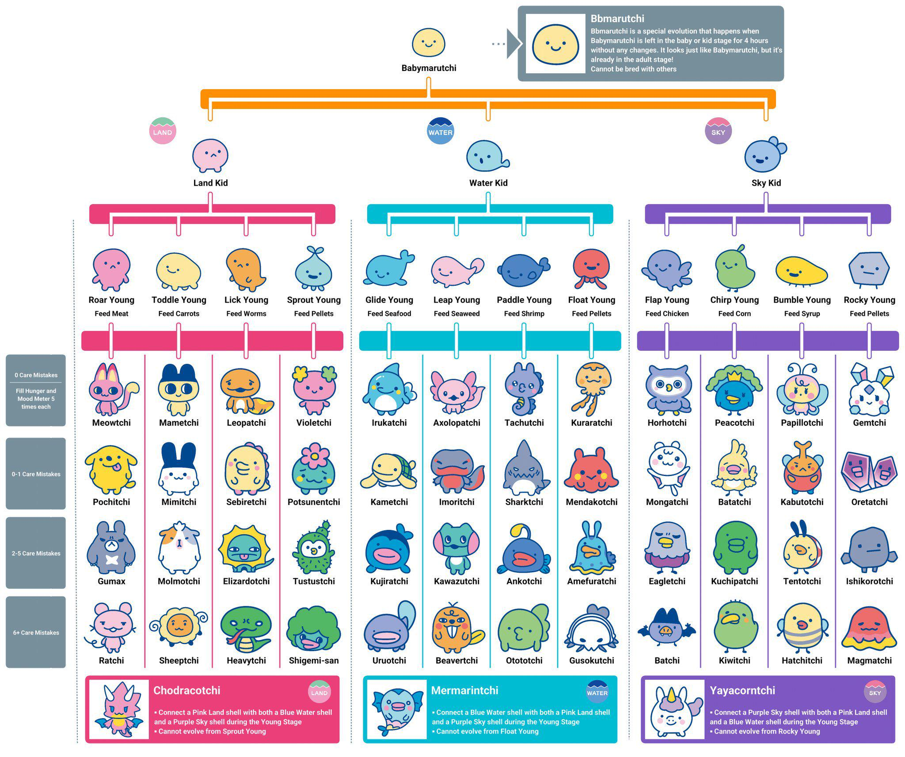

Care Tutorial
Tamagotchi care is all about balance and attention. To keep your digital pet happy and healthy, you’ll need to regularly feed it, play games, clean up after it, and respond to its needs. Each Tamagotchi has a hunger meter, happiness level, and health status that you’ll need to monitor closely. Feeding your Tamagotchi nutritious meals will keep its hunger at bay, while playing games will boost its happiness. Neglecting these needs can lead to unhappy or even sick pets, so it’s important to check in frequently and provide the care they require.
By pressing the A button, you can navigate through the menu options to select food, games, or other care activities. The B button is used to confirm your choices, while the C button allows you to cancel or go back. Each Tamagotchi version may have slightly different care options, but the core principles remain the same: attentive care leads to a thriving digital pet.
In addition to basic care, many Tamagotchi versions include special features like training, social interactions, and even mini-games that can enhance your pet’s experience. Some devices allow you to connect with other Tamagotchi for playdates or competitions, adding a social element to the care routine. As you become more familiar with your Tamagotchi’s needs and preferences, you’ll find that caring for it becomes a rewarding and enjoyable part of the experience. Whether you’re a first-time player or a seasoned collector, mastering the care mechanics is key to unlocking the full potential of your Tamagotchi.

Evolution Tutorial
With the latest Tamagotchi, the Tamagotchi Paradise, players can now experience a new evolution system that allows for even more customization with their digital pets. As your Tamagotchi grows, it will evolve into different forms based on its habitat, how well you care for it, and the diet you provide. This new system introduces a variety of evolution paths, with over 50,000 possible combinations of characters to discover.
On the Paradise, players can choose from three different habitats for their Tamagotchi: the land, the sea, and the sky. Each habitat offers unique evolution options. For example, a Tamagotchi raised in the land habitat may evolve into a more cat-like character, while one raised in the sky habitat may take on a more avian form. The choices you make in caring for your Tamagotchi will directly influence its evolution, making each playthrough a unique experience.
By referring to the image below, players can see the various evolution paths available in the Tamagotchi Paradise and plan their care strategies accordingly to unlock their favorite characters. Each evolution path is determined by the habitat chosen, and the diet provided to the Tamagotchi in its early stages of life. Beware that if you do not provide adequate care, your Tamagotchi will evolve into Bbmarutchi, a character that cannot evolve further and cannot be bred.
To obtain the rare characters, players will need to connect their Tamagotchi Paradise two other devices of differing colors. For example, if you have a purple Tamagotchi Paradise, you must connect to a blue one and a pink one in order to unlock the rare characters. This encourages players to interact with others and share their Tamagotchi experiences, fostering a sense of community among fans.
